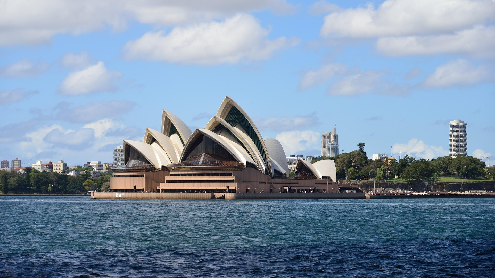
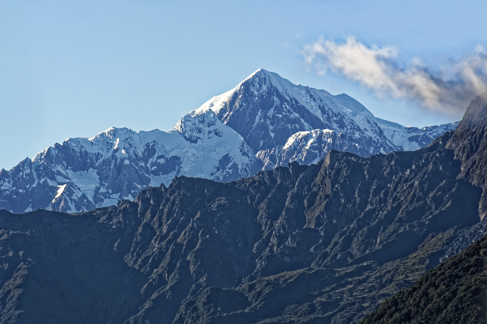
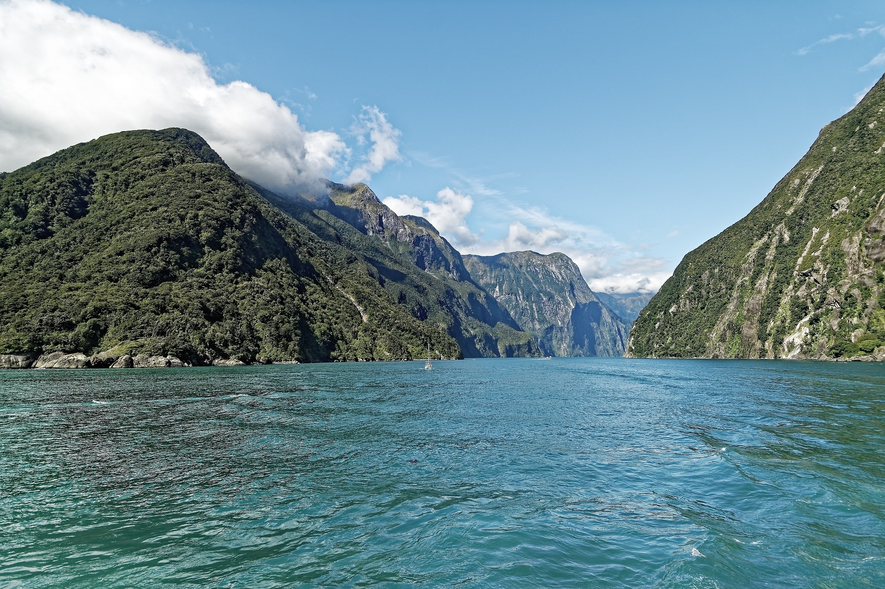
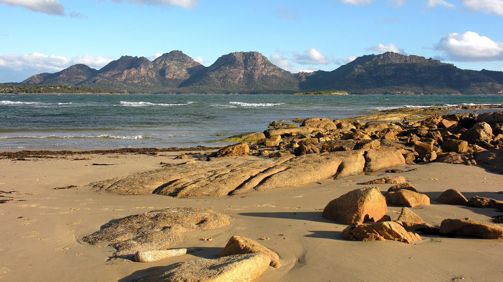

Ópera de Sydney, Austrália
A casa da Ópera de Sydney, também conhecida como Teatro de Sydney, é
um dos edifícios de espetáculo mais marcantes em nível mundial, e um
dos símbolos da Austrália, localizada na cidade de Sydney. A
construção, projetada por Jørn Utzon, começou em 1959 e está
localizada sobre a Baía de Sydney.

Monte Cook, Nova Zelândia
O Monte Cook, também conhecido como Aoraki, é a montanha mais alta
da Nova Zelândia, com 3.724 metros de altura. Localizado nos Alpes
Sul, é um destino popular para alpinistas e amantes da natureza. O
Monte Cook é cercado por paisagens deslumbrantes, incluindo
glaciares, lagos e vales. A região é parte do Parque Nacional
Aoraki/Mount Cook, que oferece diversas trilhas para caminhadas e
vistas panorâmicas impressionantes.

Milford Sound, Nova Zelândia
Milford Sound é um fiorde na ilha Sul, na Nova Zelândia, cavado pelo
degelo nas montanhas e pela ação do vento. É o principal ponto
turístico natural da Nova Zelândia. O fiorde se encontra no segundo
ponto mais pluvioso do mundo e tem seu ponto culminante no Pico
Mitre, a 1692 metros de altitude.

Tasmânia, Austrália
Tasmânia é uma ilha e um estado da Austrália, localizada ao sul do
continente australiano. É conhecida por sua natureza intocada,
parques nacionais, fauna única e paisagens deslumbrantes. A Tasmânia
é também famosa por sua culinária, vinhos e produtos locais, como o
queijo e o salmão. É um destino popular para ecoturismo e atividades
ao ar livre, como caminhadas, ciclismo e observação de vida
selvagem.
